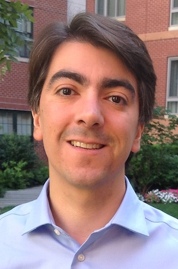

Biography
I am a research scientist in the Operations Research team at Google in Cambridge, MA. I hold a B.S and M.S. in Mathematical Engineering from University of Chile and a Ph.D. in Industrial Engineering from the Georgia Institute of Technology.
I have served as the vice-chair of Integer and Discrete Optimization for the INFORMS Optimization Society (2013-2015), chair of the INFORMS Section on Energy, Natural Resources, and the Environment (2010-2012), chair of the program committee for the 9th Mixed Integer Programming Workshop (MIP 2012) and chair of the local committee for the 16th Mixed Integer Programming Workshop (MIP 2012). I am currently an associate editor for Mathematical Programming, Mathematical Programming Computation, Operations Research and Operations Research Letters.
In January of 2017 I was named by President Obama as one of the recipients of the 2014 Presidential Early Career Award for Scientists and Engineers (PECASE). I have also received the Faculty Early Career Development (CAREER) award from the National Science Foundation, the INFORMS Computing Society (ICS) Prize, a first prize in the INFORMS Junior Faculty Interest Group Paper Competition, the Herman Goldstine Postdoctoral Fellowship and the INFORMS Optimization Society Student Paper Prize.
Collaborators
Shabbir Ahmed, Erling D. Andersen, Ross Anderson, David Belanger, Magdalena Bennett, Russell Bent, Tim Besard, Daniel Bienstock, Daniel Dadush, Sanjeeb Dash, Bjorn De Sutter, Santanu S. Dey, Iain Dunning, Rodolfo Carvajal, Valentin Churavy, Luis A. Cisternas, Chris Coey, Miguel Constantino, Daniel Espinoza, Alexandre S. Freire, Marcos Goycoolea, Oktay Günlük, Joey Huchette, David Scott Hunter , Nathalie E. Jamett, Andrea Lodi, Lea Kapelevich, Ahmet B. Keha, Çınar Kılcıoğlu, Mustafa R. Kılınç, Guido Lagos, Miles Lubin, Will Ma, Sajad Modaresi, Sina Modaresi, Eduardo Moreno, Diego Morán, Carter Mundell, Alan T. Murray, George L. Nemhauser, Theodore P. Papalexopoulos, Krunal Patel, Luis Rademacher, Jarrett Revels, David M. Ryan, Denis Saure, Mathieu Tanneau, Christian Tjandraatmadja, Alejandro Toriello, Andres Weintraub, Sercan Yıldız, Emre Yamangil, Ilias Zadik, Tauhid Zaman, José R. Zubizarreta